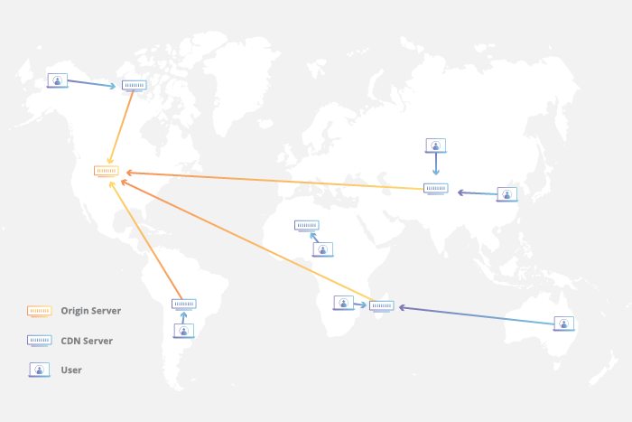
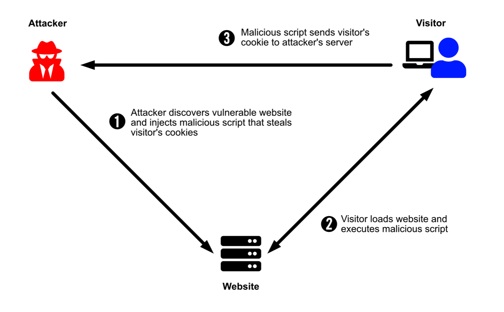
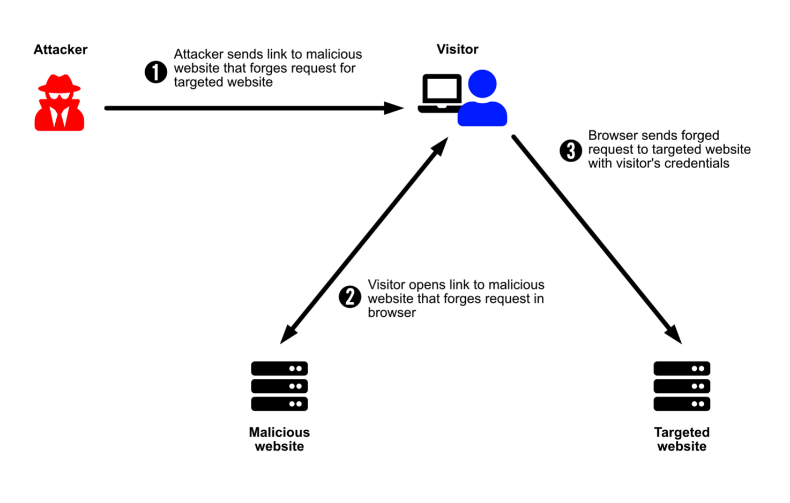

Web
REST and Security
Bertil Chapuis
## <i class="fas fa-tasks"></i> Overview of Today's Class - Representational State Transfer (REST) - Cross-Origin Resource Sharing (CORS) - Cross-site scripting (XSS) - Cross-site Request Forgery (CSRF)
Representational state transfer (REST)
## <i class="fas fa-network-wired"></i> What is a RESTful API? **API** stands for **A**pplication **P**rogramming **I**nterface. An API is a set of functions and procedures that allow the creation of applications that access the features or data of an operating system, application, or other service. A RESTful API is an API that respects the constraints of the REST architecture.
## <i class="fas fa-network-wired"></i> Representational state transfer (REST) **REST** stands for **RE**presentational **S**tate **T**ransfer. It is a software architectural style that defines a set of constraints to be used for creating services: - Client-server - **Uniform Interface** - **Stateless** - **Cache** - **Layered System** - Code-On-Demand (Optional) These constraints fit well with HTTP, but can be used with other protocols as well. https://www.ics.uci.edu/~fielding/pubs/dissertation/rest_arch_style.htm
## <i class="fas fa-network-wired"></i> Uniform Interface The **Uniform Interface** constraint states that the interface between components should be uniform. In the context of the HTTP protocol, this translates to: - Identification of resources (e.g. URI) - Manipulation of resources (e.g. GET, POST, PUT, DELETE, PATCH, HEAD) - Self-descriptive messages (e.g. Content-Type: application/json) - Hypermedia as the engine of application state (e.g. HATEOAS) https://www.ics.uci.edu/~fielding/pubs/dissertation/rest_arch_style.htm
## <i class="fas fa-hand-paper"></i> Uniform Interface In the following example, identify the architectural constrains of the uniform interface. ```http GET https://api.github.com/users/royfielding ``` ```http HTTP/1.1 200 OK Content-Type: application/json; charset=utf-8 { "name": "Roy T. Fielding", "company": "Adobe", "blog": "http://roy.gbiv.com/", "location": "Tustin, California", "login": "royfielding", "id": 1724757, ... "following_url": "https://api.github.com/users/royfielding/following{/other_user}", "gists_url": "https://api.github.com/users/royfielding/gists{/gist_id}", "starred_url": "https://api.github.com/users/royfielding/starred{/owner}{/repo}", } ```
## <i class="fas fa-network-wired"></i> Stateless Constraint Communication must be **stateless** in nature, such that each **request** from the client to theserver must **contain all of the information necessary to understand the request**, and cannot take advantage of any stored context on the server. This constraint induces the properties of: - **Visibility** is improved because a monitoring system does not have to look beyond a single request datum in order to determine the full nature of the request. - **Reliability** is improved because it eases the task of recovering from partial failures. - **Scalability** is improved because not having to store state between requests allows the server component to quickly free resources, and further simplifies implementation because the server doesn't have to manage resource usage across requests. A **RESTful** architecture imposes that **Session state** is kept entirely on the **client**. https://www.ics.uci.edu/~fielding/pubs/dissertation/rest_arch_style.htm
## <i class="fas fa-network-wired"></i> Statelessness in the Wild If the **session state** is kept entirely on the **client** and embed in **requests**, then **any server** (or lambda function) behind a reverse proxy can compute responses. <img src="images/reverse-proxy.svg" style="width: 600px"> The **serverless model**, which often refers to server-side computations that run in **stateless** compute containers, extensively rely on the **stateless** constraint.
## <i class="fas fa-network-wired"></i> Cache Constraint Data within a response to a request can implicitly or explicitly be labeled as **cacheable** or non-cacheable. If a response is cacheable, then a client is given the right to **reuse that response data** for a later equivalent requests. The cache constraint: - Improves efficiency - Eases scalability - Improves user-perceived performance On the other hand users can be exposed to stale data, impacting the consistency of the system. https://www.ics.uci.edu/~fielding/pubs/dissertation/rest_arch_style.htm
## <i class="fas fa-network-wired"></i> Cacheability in the Wild A content delivery network (CDN) refers to a geographically distributed group of servers which work together to provide fast delivery of Internet content.  A cacheable responses can easily be stored at the edge (close to the end-user). https://www.cloudflare.com/learning/cdn/what-is-a-cdn/
## <i class="fas fa-drum"></i> The cache joke There are only two hard things in Computer Science: - naming things - cache invalidation - (and off-by-one errors). -- Phil Karlton
## <i class="fas fa-network-wired"></i> Layered System Constraint The layered system style allows an architecture to be composed of hierarchical layers by constraining component behavior such that each component cannot "see" beyond the immediate layer with which they are interacting. The primary disadvantage of layered systems is that they add overhead and latency to the processing of data, reducing user-perceived performance. https://www.ics.uci.edu/~fielding/pubs/dissertation/rest_arch_style.htm
## <i class="fas fa-network-wired"></i> Layered Systems with GraphQL **GraphQL** is a **query language** for APIs and a **runtime** for fulfilling those queries with your existing data. In other words, GraphQL is an **opinionated** way of building a RESTful API and of **layering** multiple data sources and services.
## <i class="fas fa-network-wired"></i> Hand's on GraphQL Checkout the `example-graphql` repository in the `web-classroom` organisation. Run the project and try the GraphiQL interface. Follow the excellent tutorial provided by GraphQL on how to integrate GraphQL with Express. https://graphql.org/graphql-js/running-an-express-graphql-server/
## <i class="fas fa-network-wired"></i> Designing HTTP APIs REST specifies architectural principles for designing HTTP APIs. These principles are easy to break and not always necessary to follow. Sources of inspiration include popular APIs such as the one provided by Github, Facebook, Amazon, Twitter or Google. These APIs are not RESTful but they are well designed. Instead of exposing everything (CRUD like API), it is a good idea to start by defining the requirements of the API and the abstractions exposed to the users. On this basis, you can: - Define the different types of resources (self-descriptive messages) - Define a good structure for your endpoints (resource identification) - Define the actions on the resources (resource manipulation) - Implement the API (easiest part) - Maintain a good design and a good documentation (**hardest part**)
Cross-Origin Resource Sharing (CORS)
## <i class="fas fa-globe-europe"></i> Same Origin Policy The same-origin policy is a critical security mechanism that restricts how a document or script loaded from one origin can interact with a resource from another origin. Two URLs have the same origin if the domain, protocol and port are the same for both. https://developer.mozilla.org/en-US/docs/Web/Security/Same-origin_policy
## <i class="fas fa-globe-europe"></i> Cross-Origin Resource Sharing (CORS) A web application executes a cross-origin HTTP request when it requests a resource that has a different origin (domain, protocol, or port) from its own. <img src="images/CORS_principle.png" alt="CORS principle" style="width: 500px" /> https://developer.mozilla.org/en-US/docs/Web/HTTP/CORS
## <i class="fas fa-globe-europe"></i> Cross-Origin Resource Sharing (CORS) CORS uses HTTP headers to give a web application running at one origin, access to selected resources from a different origin. In a request from `domain-a.com` the `Origin` header tells `domain-b.com` where the request come from. ```http GET / HTTP/1.1 Host: domain-b.com Origin: http://domain-a.com ``` In a response from `domain-b.com`, the `Access-Control-Allow-Origin` header tells the browser if it is allowed to include the resource. Here, the `*` wildcard means that the resource can be accessed by any domain. ```http HTTP/1.1 200 OK Access-Control-Allow-Origin: * ``` The `domain-b.com` server can restrict access to `domain-a.com` as follow: ```http HTTP/1.1 200 OK Access-Control-Allow-Origin: http://domain-a.com ``` https://developer.mozilla.org/en-US/docs/Web/HTTP/CORS
# <i class="fas fa-globe-europe"></i> CORS credentialed requests **Credentialed requests** are aware of **third-party** HTTP cookies and HTTP information that are not sent by default in cross-site requests. ```js fetch(url, {method: 'POST', credentials: 'include', body: JSON.stringify(data)}); ``` Why would anyone do that? https://developer.mozilla.org/en-US/docs/Web/HTTP/CORS#Requests_with_credentials
# <i class="fas fa-globe-europe"></i> CORS preflight request A CORS **preflight request** is an OPTIONS request that is automatically issued by the browser to checks wether the server is aware of the methods and headers being used by the client (e.g. `Access-Control-Request-Method: DELETE`). If the server allows this kind of requests, then it answers with the corresponding header (e.g. `Access-Control-Allow-Methods: DELETE`), allowing the browser to send the actual request (e.g. `DELETE`). Web applications are often developped under the assumption that they will never receive a CORS request. This mechanism allow them to opt-in. https://developer.mozilla.org/en-US/docs/Glossary/Preflight_request
Cross-site scripting (XSS)
# <i class="fas fa-user-secret"></i> Cross-site scripting (XSS) Cross-site scripting (XSS) is a security exploit which allows an attacker to inject a malicious client-side code into a website. This code is executed by the victims and lets the attackers bypass access controls and impersonate users. https://developer.mozilla.org/en-US/docs/Glossary/Cross-site_scripting

## <i class="fas fa-user-secret"></i> Preventing XSS with HTML sanitization An HTML sanitization library strips anything that could lead to script execution from HTML, so you can safely inject complete sets of HTML nodes from a remote source into your DOM. Recall that Javascript can be included with the script element: ```html <scriptt> alert('Hello World!'); </scriptt> ``` But also with HTML attributes: ```html <a onclick="alert('Hello World!')">link</a> ``` Hence, the necessity to carefully check the HTML before saving or displaying it. https://developer.mozilla.org/en-US/docs/Mozilla/Add-ons/WebExtensions/Safely_inserting_external_content_into_a_page#Working_with_HTML_content
## <i class="fas fa-user-secret"></i> Preventing XSS with Content Security Policy (CSP) CSP enables the server to specify trusted domains, which enables the mitigation of XSS attacks. For instance, the following policy trust subresource from the current domain and images from instagram: ```http Content-Security-Policy: default-src 'self'; img-src instagram.com ``` A CSP compatible browser will then only execute scripts loaded in source files received from those allowlisted domains Therefore, such a policy will prevent the transmission of user credentials to a untrusted server. https://developer.mozilla.org/en-US/docs/Web/HTTP/CSP
## <i class="fas fa-hand-paper"></i> Hands on XSS Clone the `example-security` repository located in the `web-classroom` organization. It illustrates the threats associated with cross-site scripting and how to mitigate them.
Cross-site Request Forgery (CSRF)
## <i class="fas fa-hand-paper"></i> Cross-site Request Forgery (CSRF) CSRF is an attack that impersonates a trusted user and sends a website unwanted commands. This can be done, for example, by including malicious parameters in a URL behind a link that purports to go somewhere else: ```html <img src="https://www.example.com/index.php?action=delete&id=123"> ``` https://developer.mozilla.org/en-US/docs/Glossary/CSRF

## <i class="fas fa-user-secret"></i> How to prevent Cross-site Request Forgery (CSRF) To prevent cross-origin request forgery, you must add unguessable tokens in your requests.
## <i class="fas fa-hand-paper"></i> Cross-site Request Forgery (CSRF) Clone the `example-security` repository in the `web-classroom` organization. It illustrates how easily this kind of attack can be achieved.